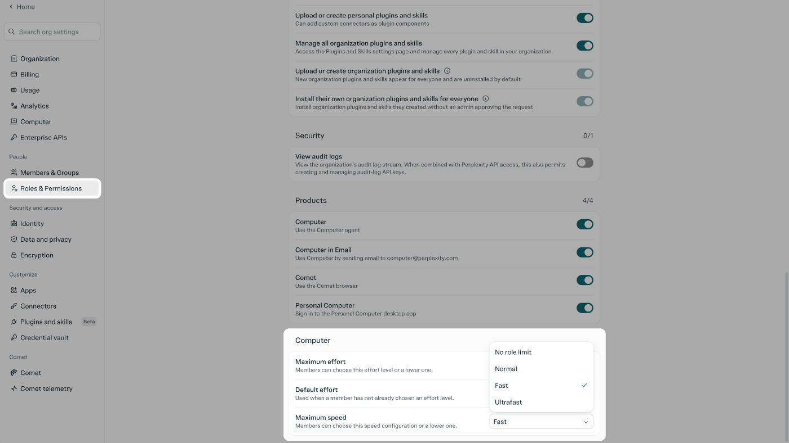

先说清持续负责什么
一次性问答结束后，下一次同类工作往往还要重新解释背景。Teammates把职责保留下来：创建时填写名称和外观，可在高级选项里写指令与排程，再在聊天中连接需要的服务。合理的任务描述应包括资料范围、何时行动、输出给谁，以及结果放在哪里。例如跟进一个工作频道，应明确是哪一个频道和什么变化值得整理，而不是只说帮我看消息。队友可以把工作分给多个代理，再检查汇总结果；实际减少的是反复交代任务的步骤，并不意味着组织已经把判断责任移交给它。
Perplexity Computer · 产品／官方更新

一次性问答结束后，下一次同类工作往往还要重新解释背景。Teammates把职责保留下来：创建时填写名称和外观，可在高级选项里写指令与排程，再在聊天中连接需要的服务。合理的任务描述应包括资料范围、何时行动、输出给谁，以及结果放在哪里。例如跟进一个工作频道，应明确是哪一个频道和什么变化值得整理，而不是只说帮我看消息。队友可以把工作分给多个代理，再检查汇总结果；实际减少的是反复交代任务的步骤，并不意味着组织已经把判断责任移交给它。
新排队选项处理的是另一个常见打断：代理还在执行，用户又想起一项限制或下一步要求。开启暂存后续消息后，系统等当前轮结束再按顺序读取；队列里的消息可以修改、移除，也能选择立即发送。这样的状态区分让人能记录想法，又不必假设每次输入都会当场改变执行。多个排队要求也可能互相矛盾，尤其当前任务已经生成了新结果时；用户仍应查看队列是否过时。相比只显示忙碌动画，可编辑的待处理指令让等待期间的意图更容易检查。
企业管理员现在可以为角色设置Computer默认和最高推理强度，并限制速度档。较快执行可能更快消耗额度，默认设置则影响未主动选择的任务。需要注意权限的组合方式：用户同时属于多个角色时，允许范围会叠加，较宽的设置可能生效；组织总开关和账户资格仍然约束功能。因此不能只修改一个角色就假定某个人已经受到最严格限制。发布记录也把连接服务、共享与运行控制分成不同入口，团队应核对实际角色分配和可访问资料，而不把速度上限当成数据访问边界。
同一批更新还提供Apple Silicon Mac的本地Computer路径，模型、执行框架和操作留在设备上；要求Mac应用26.42.0或以上，厂商建议36GB统一内存。它与Teammates的云端隔离环境是不同模式，不能因为存在本地选项，就把所有长期任务描述成无需联网。Teammates当前面向个人Max预览，企业需要另行申请；持续任务、并行分工和自动化频率也会影响额度。采用前最实用的问题是某项职责是否适合持续运行，以及当服务授权、文件位置或工作目标改变时，谁会更新这份职责。